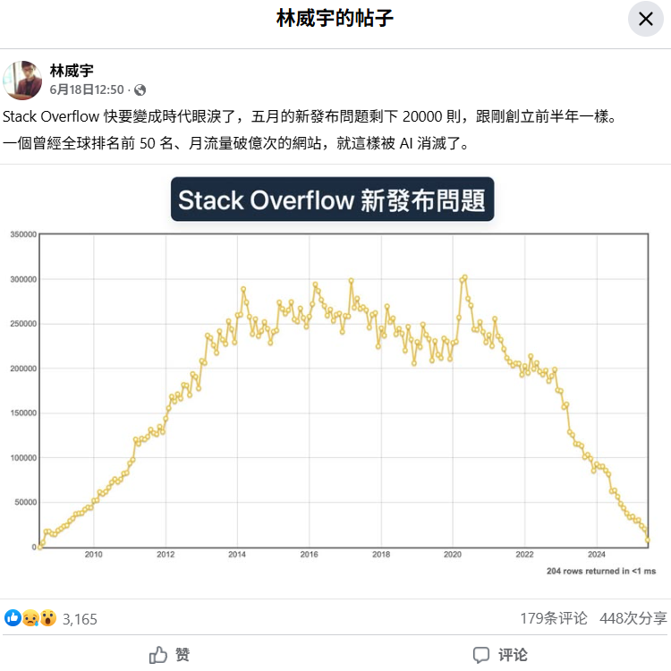

LLM 大语言模型技术对世界的影响 - 1#
Stack Overflow vs. LLM#


在 2020 年前，我所接受到的信息是会使用 Stack Overflow 而不是只会使用 CSDN 搜索问题的解决方案被视为是有很强的信息检索能力。然而从上图也可以看出，全球用户通过 Stack Overflow 提问的频率随着 LLM 模型的小规模到全面应用呈直线下滑的趋势。现在如果再随机询问一名计算机专业的在校学生：“你认为会使用 Stack Overflow 搜索问题的解决方案比只会使用 CSDN 的学生更有信息检索能力吗？”，得到的回答可能更多是：“为什么不用 AI 呢？”。
Stack Overflow 就是被 LLM 大语言模型技术革命的典型产品之一。R.I.P.
LLM 让其他网站的用户直接访问量下降了30%#
SEO 优化曾被视为是提高网页曝光的首要技术之一，然而现在用户通过 LLM 模型可以直接获得想要得到的信息（也许并不是真正想要得到的，但是毕竟绝大多数用户已经养成了信任 LLM 模型给出的结果，而不是进行二次校验），像 SEO 这些想要提高用户直接访问网页的技术就被降维打击了，就连许多顶级域名网站的直接访问量也下滑严重。
在可预见的未来，随着 LLM 模型更大规模商业应用，所有网页的用户直接访问量还会继续大幅下滑。但是这些网页又是 LLM 模型的信息检索来源，如果网页编码人员的正向激励不足，则网页开发数量会越来越少，那么 LLM 模型的信息检索来源也越来越少，或许符合 LLM 模型读取但在人类看来没有任何美观感的结构化数据就是未来绝大多数网页的归宿。
The AIpocalypse is here for websites as search referrals plunge
Turn out the lights, the internet is over
Thomas Claburn Sun 22 Jun 2025 // 10:14 UTC
Google AI Overviews and other AI search services appear to be starving the hand that fed them.
Google’s AI-generated summaries of web pages, officially released in May 2024, show up atop its search results pages so search users don’t have to click through to the source website.
A year later, enterprise AI analytics biz BrightEdge reported that Google AI Overviews had generated more search impressions (up 49 percent), but click-throughs to the actual websites dropped 30 percent.
That means AI Overviews is leading more people to use Google Search to find answers to their queries. But those people are less likely to follow search results links that lead to the source website. Good for Google. Terrible for the ecosystem of websites that had learned to depend on search referrals for buyers, readers, and viewers.
Kevin Indig, who writes about search engine optimization (SEO), marked the one-year anniversary of AI Overviews with a usability study. Based on data from the 70 individuals surveyed, he observed that when AI Overviews are absent, “outbound click rates rise to an average of 28 percent on desktop and 38 percent on mobile.”
Ahrefs, an SEO site, in April said AI Overviews reduced clicks by about 35 percent.
Citing data provided by SimilarWeb (which SimilarWeb shared with El Reg, Barron’s last week reported that search referrals to top US travel and tourism have fallen 20 percent year on year, while news and media sites saw search-driven traffic drop by 17 percent during that period.
Other categories of website also showed declining search referral traffic: e-commerce (-9 percent); finance (-7 percent); food/drink (- 7 percent); and lifestyle/fashion (-5 percent).
Meanwhile, AI search engine referrals have replaced only about 10 percent of traditional search referral traffic, according to SimilarWeb.
While the stats vary depending on who’s measuring, the story is consistent: web publishers, who provided the content that trained these AI models, face dramatically diminishing visitors, which means lower advertising and subscription revenues, even amid overall growth in search impressions.
This may help explain the lawsuits web publishers have filed against AI firms.
The latest indication of this widely reported trend comes from Matthew Prince, CEO of Cloudflare, which has been developing tools to thwart bots that scrape web data for AI training.
Speaking on Thursday at an Axios event in Cannes, France, Prince reportedly said that ten years ago, Google’s average ratio of pages crawled to visitors referred was 2:1. Six months ago, that ratio had increased to 6:1. Today, according to the Prince, it’s 18:1.
While Prince did not clarify the breakdown of crawler duties (e.g. indexing, copying data for training, or something else), the suggestion is that AI companies are taking more content and giving less in return.
And that’s allegedly the case for two other AI model makers that have implemented web search, OpenAI and Anthropic.
According to Prince, OpenAI’s ratio of pages crawled to visitors referred has gone from 250:1 to 1,500:1 while Anthropic’s ratio has gone from 6,000:1 to 60,000:1.
As we noted earlier this week, AI crawlers have become a burden for many websites, which end up bearing the cost to serve content to AI firms for commercial AI services.
Despite much ado about the potential for an AI-based challenger to disrupt Google, the Chocolate Factory still controls about 90 percent of the search market, according to BrightEdge. But it’s eating all the cacao beans that made its business possible in the first place.
Google, OpenAI, Anthropic and Cloudflare did not immediately respond to requests for comment. ®
LLM 模型的大规模商业化应用是又一次的“反脆弱”革命#
So you can think really big thoughts and the leverage of having those big thoughts has just suddenly expanded enormously. I had this tweet two years ago where I said “90% of my skills just went to zero dollars and 10% of my skills just went up 1000x”. And this is exactly what I’m talking about - having a vision, being able to set milestones towards that vision, keeping track of a design to maintain or control the levels of complexity as you go forward. Those are hugely leveraged skills now compared to knowing where to put the ampersands and the stars and the brackets in Rust.
– Kent Beck, interview with Gergely Orosz
Posted 22nd June 2025 at 3:28 pm
So you can think really big thoughts and the leverage of having those big thoughts has just suddenly expanded enormously.
GPT: ➡️ 这意味着宏观思维、抽象思维、系统设计等“元能力”，在新环境（尤其是AI普及、软件工具飞跃）下，变得更有用、更值钱——这本身就表现了“某些能力在波动和变化中变得更有价值”的特质。
I had this tweet two years ago where I said ‘90% of my skills just went to zero dollars and 10% of my skills just went up 1000x’.
GPT: ➡️ 这体现了一个核心观点：环境改变后，冗余或传统的技能会迅速贬值，而某些关键元技能在不确定环境中会极大受益。这正是塔勒布提出的反脆弱能力：不是稳定中求生，而是在波动中变强。
having a vision, being able to set milestones towards that vision, keeping track of a design to maintain or control the levels of complexity as you go forward.
GPT: ➡️ 这里提到的能力（设想愿景、阶段性规划、复杂度控制）都属于高度抽象和非机械化的技能，难以被自动化取代，也随着AI、工具等自动化程度提升而显得更加稀缺和珍贵。
Those are hugely leveraged skills now compared to knowing where to put the ampersands and the stars and the brackets in Rust.
GPT: ➡️ 这段对比非常有力：具体细节性技能（比如掌握某语言的语法细节）变得廉价，而“系统性、方向性、结构性思维”变得更有杠杆效应。这是一种在变化中产生收益不对称的能力，正是反脆弱的体现。
2025.6.27